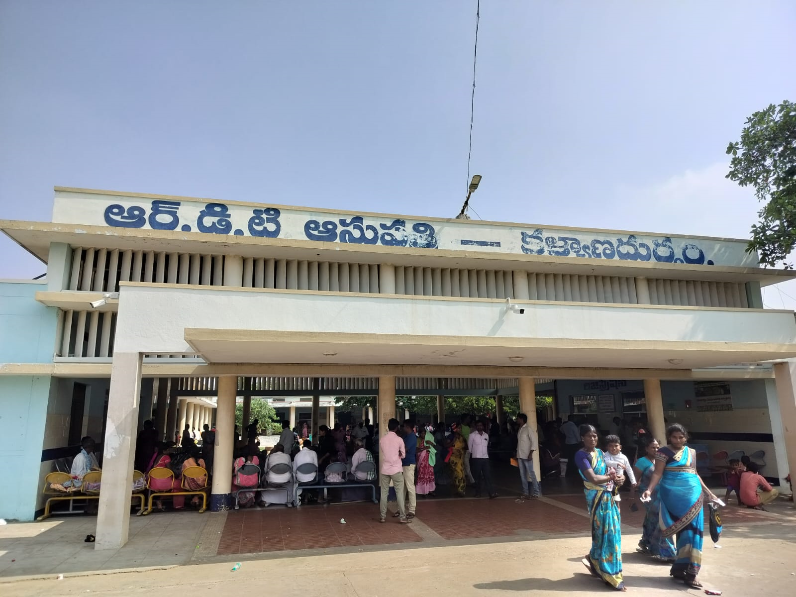

RDT Hospitals

The Rural Development Trust (RDT), as a beacon of healthcare accessibility and affordability, has played a pivotal role in establishing three hospitals — Kalyandurg Hospital, Bathalapalle Hospital, and Kanekal Hospital. These healthcare institutions stand as pillars of community well-being, embodying the core objective of providing essential medical services and medicines at a low cost. This commitment to affordable healthcare aligns with RDT's overarching mission of ensuring that individuals, irrespective of their economic status, can access quality treatment and medications.
RDT's hospital network encompasses both secondary-level and primary-level facilities, strategically positioned to cater to the diverse healthcare needs of the region. Notably, one of these hospitals is situated in the Nallamalla Forest, reflecting RDT's dedication to extending medical services to marginalized tribal communities. By establishing hospitals at different levels, RDT has created a healthcare ecosystem that addresses a spectrum of health concerns, from routine medical needs to specialized care. The onset of the formidable second wave of the COVID-19 pandemic brought unprecedented challenges, necessitating swift and robust responses from healthcare institutions. RDT, recognizing the urgency of the situation, designated Bathalapalle Hospital as a dedicated COVID-19 healthcare facility. This hospital played a pivotal role in providing crucial treatment and care to 2,607 COVID-19 patients within a span of just one and a half months. The decision to repurpose the hospital underscored RDT's commitment to serving the community during times of crisis, ensuring that healthcare remains accessible even in the face of a global health emergency.
While Bathalapalle Hospital took on the specialized role of managing advanced and sophisticated cases, Kalyandurg and Kanekal Hospitals remained steadfast in their commitment to general patient care. This strategic distribution of healthcare services ensured that the community continued to receive comprehensive medical attention, addressing both routine health concerns and emergent challenges. Beyond the immediate response to the pandemic, RDT's healthcare initiatives extend to proactive measures aimed at enhancing the well-being of the community. The hospital network actively engages in corrective surgeries, with 709 procedures conducted to address various health conditions. This intervention is instrumental in improving the quality of life for individuals, correcting ailments, and fostering a healthier community.